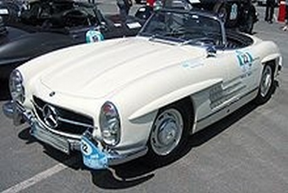

Mercedes-Benz 300 Sl es un automóvil superdeportivo de dos plazas producido por el fabricante alemán Mercedes-Benz entre los años 1954 y 1963. Se fabricó inicialmente con carrocería coupé, y luego también como descapotable. El 300 SL fue uno de los primeros superdeportivos fabricados en la historia. Se le dio el apodo de Widowmaker ("hacedor de viudas"), porque muchos conductores murieron al estrellarse con su 300 SL. El 300 SL es conocido por sus distintivas puertas de ala de gaviota y por ser el primer automóvil en montar un motor de gasolina con inyección directa de combustible. La versión Gullwing ("Alas de gaviota") se fabricó desde 1954 a 1957.

Mercedes-Benz 500K
Mercedes-Benz 500K es un gran automóvil de turismo construido por Mercedes-Benz entre 1934 y 1936. Exhibido por primera vez en el Salón del Automóvil de Berlín de 1934 , llevó la designación de fábrica W29. Distinguido del sedán 500 por la "K" de Kompressor (alemán para supercargador ), solo equipado para estos autos de alto rendimiento, sucedió al Mercedes-Benz 380 presentado solo el año anterior. Ofrecía un motor más grande y más potente y un trabajo de carrocería más opulento para satisfacer las demandas de los clientes de mayor lujo y rendimiento. El 500K usó la misma suspensión independiente que se había introducido en el 380, con un eje delantero de doble brazo de espoleta , un eje de giro de doble articulación en la parte trasera, y ubicación separada de las ruedas, resortes helicoidales y amortiguación, una novedad mundial. En consecuencia, era un automóvil más cómodo y de mejor manejo que la anterior generación de camioneros S / SS / SSK de Mercedes de la década de 1920, y ofrecía un mayor atractivo a los compradores, en particular al creciente número de conductores femeninos con mucho talento del tiempo.